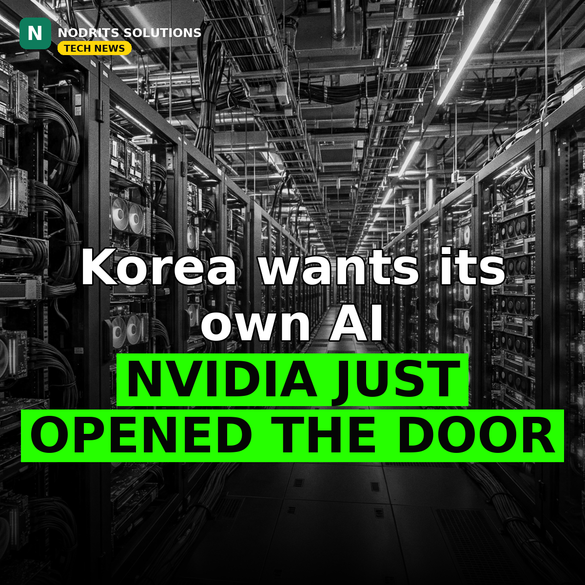

Korea Wants Its Own AI — and NVIDIA Just Opened the Door

Every country now wants its own AI stack — and Korea just got a powerful partner. On November 9, 2026, at NVIDIA AI Day Seoul, NVIDIA, Korean chip startup Rebellions and SK Telecom signed an agreement, backed by Korea's Ministry of Science and ICT, to build sovereign AI infrastructure together.
What happened
Rebellions will connect its next-generation Rebel R200 neural processing units to NVIDIA's platform via NVLink Fusion, using NVIDIA's MGX rack architecture for rack-scale inference. SK Telecom will deploy the mixed GPU-NPU systems in its AI data centers, linking them to its own A.X K2 model and the government's "AI for All" public services. R200 systems are expected to be ready for deployment in 2028. No performance, power or price figures were published — this is a collaboration agreement, not a product launch.
Why it matters
Sovereign AI is moving from rhetoric to hardware. Countries want their own AI stacks, and NVIDIA is opening its interconnect so local chipmakers can plug in instead of competing head-on — a model other nations are likely to copy. The AI race is becoming a race between national stacks, and the winners will be the countries that can build local capability on top of open platforms rather than starting from zero.
What it means for you
Local-language and sovereign AI stacks will create demand for localized models, regional AI services and infrastructure work outside the US Big Tech bubble. Builders who can localize AI for a specific market — language, regulation, culture — have a growing niche. If you serve clients in a specific country or region, start learning what sovereign-AI programs exist there; the contracts will follow the announcements.
The Nodrits take
NVIDIA chose to connect with a local chipmaker instead of competing head-on. Is sovereign AI the future of tech independence, or will it just fragment the internet into national walled gardens? Tell us in the comments on today's post.
Need a website, SaaS product or AI workflow built right?
Nodrits Solutions designs, develops and automates for businesses in Pakistan, the USA, UK, UAE and Saudi Arabia.
Talk to Nodrits →Sources: NVIDIA press release via GlobeNewswire / Morningstar (November 9, 2026). The 2028 deployment target and the absence of published performance figures are as the announcement states them.. Published November 10, 2026.